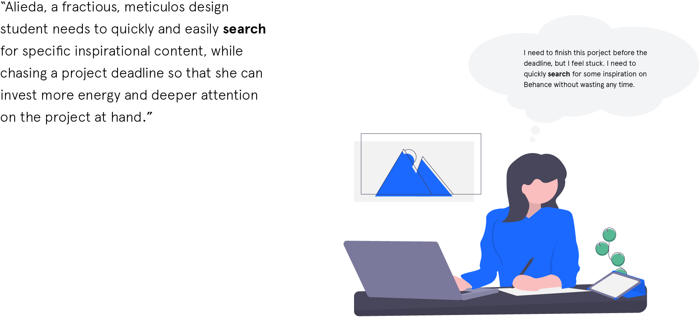
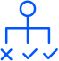

Introduction
Behance is a platfrom for creatives of just about every field and
discipline to showcase their work in the form of "projects". You can
search, like and follow people's works.
A redesign project initiated that includes a complete redesign of the search experience in the Behance website. The process includes a holistic study of the UI & UX elements and evaluating them based on the NN group heuristics.
Subsiquently followed by improvements and tweaks in multiple places to make the experience more seamless.
A redesign project initiated that includes a complete redesign of the search experience in the Behance website. The process includes a holistic study of the UI & UX elements and evaluating them based on the NN group heuristics.
Subsiquently followed by improvements and tweaks in multiple places to make the experience more seamless.
Empathizing
Heuristic evaluation
Prioritize problems
Ideation
User testing
Process
Understanding The User
To userstand the users of behance better, I listed down observation about how my friends use the platform and for what purpose. I looked into various contexts of use of the platform. Based on this research, I defined a user statement to help guide the decisions futher down the line.

To userstand the users of behance better, I listed down observation about how my friends use the platform and for what purpose. I looked into various contexts of use of the platform. Based on this research, I defined a user statement to help guide the decisions futher down the line.
Evaluating current search experience
To evalute the current search experience on Behance I followed NN groups heuristics for UI evaluation.
 Deciding what problems to work on
Deciding what problems to work on
Next, I prioritized the problems to work on by using an evaluation matrix. Mapping problems on a graph which compare the problems on two main parameters:
To evalute the current search experience on Behance I followed NN groups heuristics for UI evaluation.
Lack of a dedicated search button.
Clustering of filter and sort functionality with poor categorizing

No option to easily remove or clear induvidual filters
Cannot browse through projects in
different categories.
Next, I prioritized the problems to work on by using an evaluation matrix. Mapping problems on a graph which compare the problems on two main parameters:
- User Value the solution would bring
- Estimated time & effort required to solve the problem


Outcome
Categorizing and minimizing redundancy
Categorizing projects (based on frequently viewed creative fields) in the initial "browse page" allowing users to quickly browse through them when they are not looking for something specific to search, but rather want to explore projects in discrete
Categorizing projects (based on frequently viewed creative fields) in the initial "browse page" allowing users to quickly browse through them when they are not looking for something specific to search, but rather want to explore projects in discrete

Maximising focus by reducing distractions
While searching the user is allowed to focus on what's important by darkening everything else, aiming to alleviate cognitive load. The addition of a search button directs the user to the next step in the process.
While searching the user is allowed to focus on what's important by darkening everything else, aiming to alleviate cognitive load. The addition of a search button directs the user to the next step in the process.

Optimizing functionality using Occam's Razor
Sort and filter buttons seperated to prevent misclicks and also the removal of the sub-navigation tab to eliminate redundancy An extra feature that has been added is, "view similar projects" button. This appears when the user hovers the cursor over a project. It helps produce more insightful results which are similar to that project in the same page
Sort and filter buttons seperated to prevent misclicks and also the removal of the sub-navigation tab to eliminate redundancy An extra feature that has been added is, "view similar projects" button. This appears when the user hovers the cursor over a project. It helps produce more insightful results which are similar to that project in the same page


Maintaining context to boost usability
Clicking "filter" reaveals the options in the same page rather than a modal box. This aims to maintain consistency and flow in the minds of the user
Clicking "filter" reaveals the options in the same page rather than a modal box. This aims to maintain consistency and flow in the minds of the user

Quick search aimed towrds "Power Users"
The user can begin typing from any page in Behance, and after they have typed three characters the quick search shows up. They can continue typing to hen search it. This function is disables in special cases like, commenting or using special keys.
The user can begin typing from any page in Behance, and after they have typed three characters the quick search shows up. They can continue typing to hen search it. This function is disables in special cases like, commenting or using special keys.